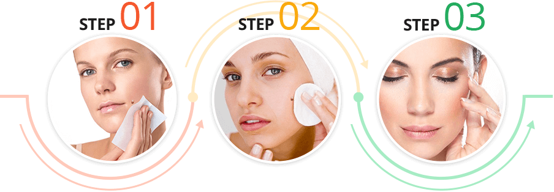
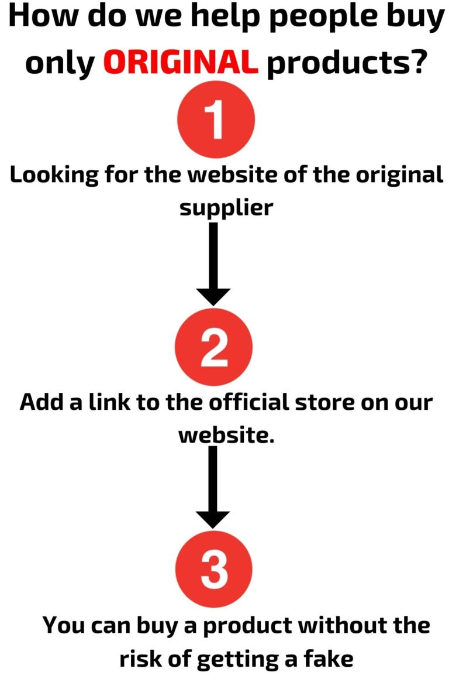

It feels more embarrassing and remorseful when you go to the mirror and see the ugly you in it just because of the skin tags that lazily sags on skin. It denies you the privilege of being beautiful and makes you look a different animal from your friends.I mean you feel the odd one out in the order of nature.But with derma correct, you ought to relax, taste its experience and wait the original you to come back.
The people that are responsible to driving this company most often dwell online. In case you want to share information or make inquiries about their product you do it easily through their official website online. The manufacturing and production of Derma corrective is undertaken in a GMP facility
Derma correct is mentioned to be a result of various natural ingredients which are combined together to give it blossom performance. Among the vital ingredients is Zincum Muriaticum and Sanguinaria which when coupled together they aid to eradicate skin tags and moles in the skin. Others include Oat bran, flaxseed, black walnut hull, Aloe Vera, prune extract, apple pectin and papaya leaf extract.
Derma correct works by properly applying in the surface of the skin where the skin tags and moles lay, until it is saturated. This is essential in order to make sure that it is absorbed faster in the skin. Once that is achieved, the skin tags will be seen falling off the skin after 8hours 0r less hours.
Derma Correct is a topical skin tag remover that offers a safe and cost-effective alternative to invasive skin tag removal surgeries.
With the easy application of derma correct, its remarkable outcome is seen after 8 hours or less. The skins tag and moles together with other ugly blemishes leaves you skin with admirable and desirable looks. Not even a stubborn skin tag will afford to remain on your skin. The skin just becomes tender like that of baby born.
Making an order of the product is just as simple as you can do it on the company’s website. The products are plenty in their online shops at affordable prices. The money is also refundable if no value is achieved in the product.
Derma correct is not a scam at all. Its reputation and goodwill about its performance is all over, not to mention the social media. The manufacturing of this product is done in certified GMP facility.Its official documentations are in their official website to assure you its credibility.
Currently there no side effects of Derma corrective reported. The product is literated in the website to be pure and natural as there is no addictive in. The product has the assurance of safe use.You will not experience any burning or irritating effects in your skin.
Nature is the utmost trusted medicine that enhances the healing to many sufferings in the world. It is there a mistake and mischief to believe that chemically made products are solutions rather naturally extracted medicine like Derma correct.Derma correct fulfills your heart desires and makes you feel like you have made it in life.